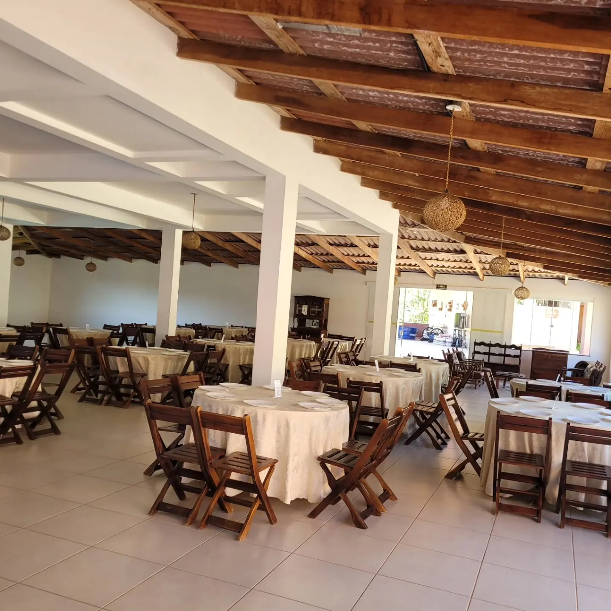
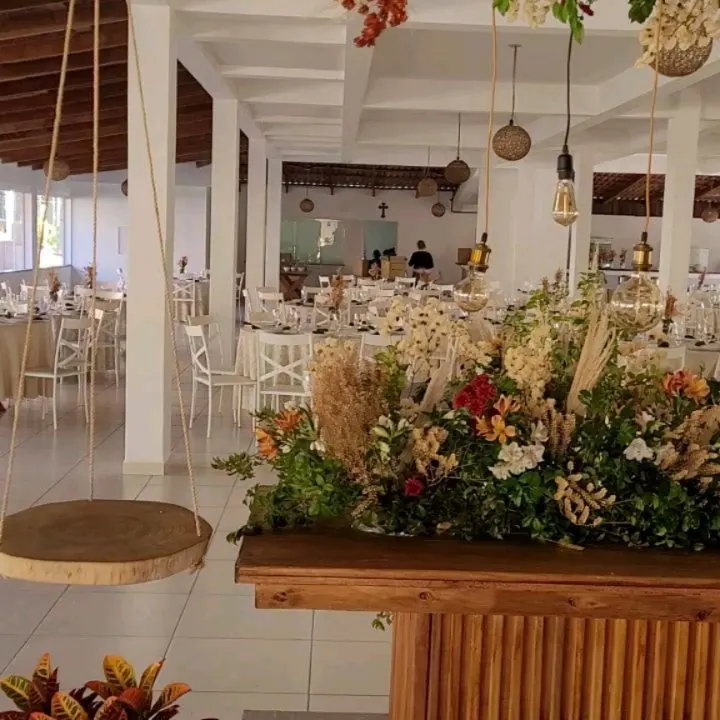

I.
Salão de festas
Salão amplo e coberto, com janelas para o verde, pronto para receber a decoração, o buffet e a pista de dança.
- Para até 400 convidados
- Iluminação pendente e estrutura de madeira
- Espaço para buffet, mesa de doces e palco